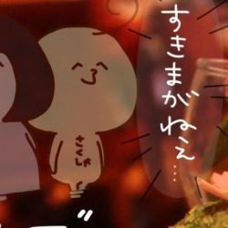
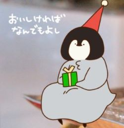
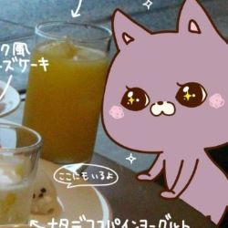

キャラクター紹介
さくしゃ
同期ペンギンのさくしゃ。
頭のサイズが描き方安定しないおかげでサイズがよく変わる。
毎年誕プレで同期ペンギンのLINEスタンプを作っているのだけれど毎年遅刻している。
最近はペンギンも好きになってきたけど、本体は圧倒的猫派の猫信者。
職場でもただの猫狂いとして認知されている。
当時日記を描いていて、晴れの日が多く、太陽がいっぱい描かれていたので、ネットの活動名は太陽になった。
その際太陽に描いていた顔が今のさくしゃの顔にそのままなったよ。
過去にさくしゃのスタンプ作った時にクリーム色のボディが裸認定されて全部リジェクトされた過去がある（実話）。
最近はリジェクトにならないように備考欄で裸じゃないです！！ってアピールしてる（わろ）
同期ペンギン
名の通りさくしゃの同期がモデルのペンギン。
愛称はペン。
大のペンギン狂いでペンギンになりたいって言い出したのをマンガにしたのが始まり。
日に日に描き方は安定してくるけど、顔のパーツのおかげで腹立つ顔になりがちなのはご愛嬌ということで。
始めはちゃんとペンギンっぽかった←
シリーズ追うごとにモチモチぽってりな魅惑のお餅ボディになりつつある。
好物は焼き鳥。やけ食いするときのイラストでは大体焼き鳥食べてる。
LINEスタンプではその煽り精神を遺憾なく発揮しているが、発案はほぼほぼ本人からの提供（実話）。
シリーズ４のあなたの推しが出た時用のスタンプに勝る煽りスタンプはまだ出来ていない。
もんぬ
さくしゃのリアルな先輩。
リアルの愛称を少しお借りしてもんぬに。
実はアフタヌーンティー一緒に行くまでほぼほぼ連絡とらず、一緒にお出かけするようになったのは割とここ数年の出来事。
さくしゃと同じく猫様大好きで家にもいる為モチーフは勿論猫ちゃん。
ポイントはまつ毛。
最近アフタヌーンティー行くおかげで紅茶ハイとかも飲むようになったらしい、嬉しい。
正直に言うともんぬが一番キャラクターとして描きやすいというのはここだけの秘密。
猫ちゃんだからね、仕方ないね。
シリーズのスタンプが描き終わったらLINEスタンプデビューする予定。
もしかしたら他にも増えるかもしれない…？